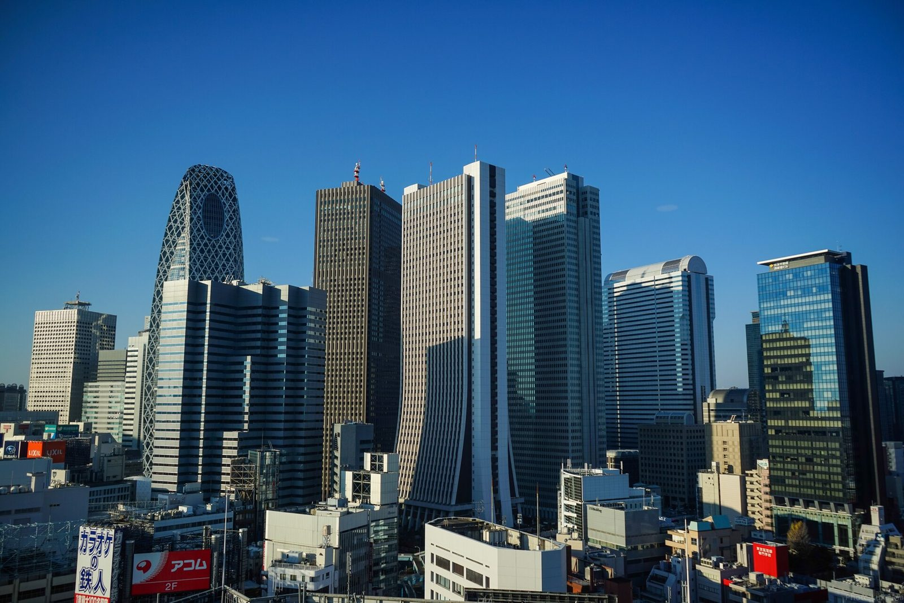
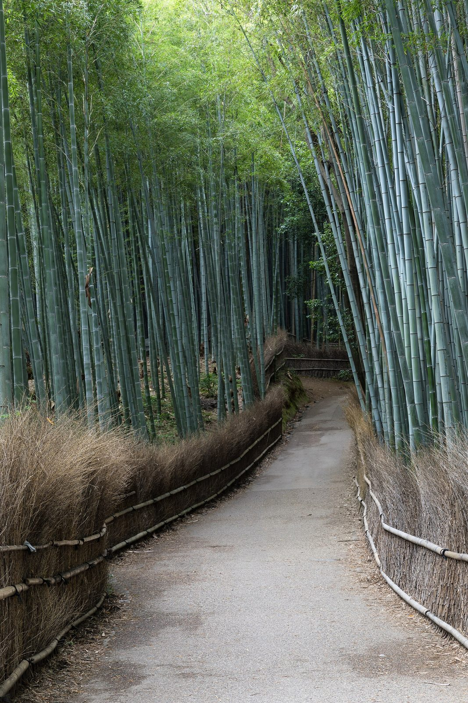
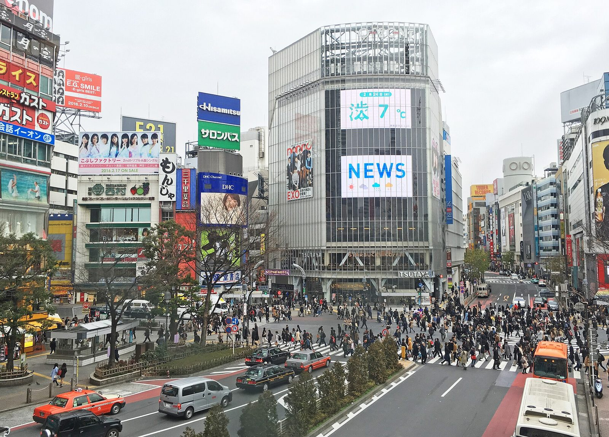
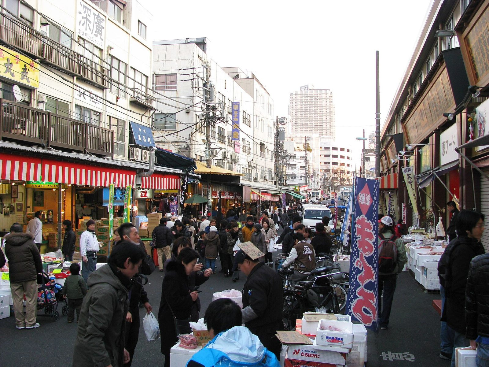
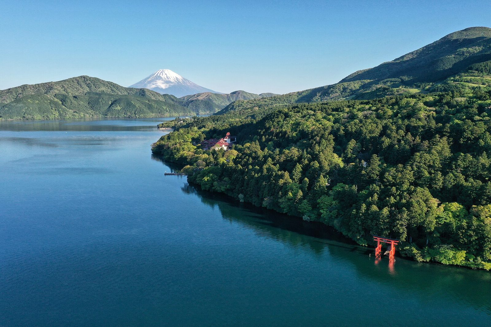
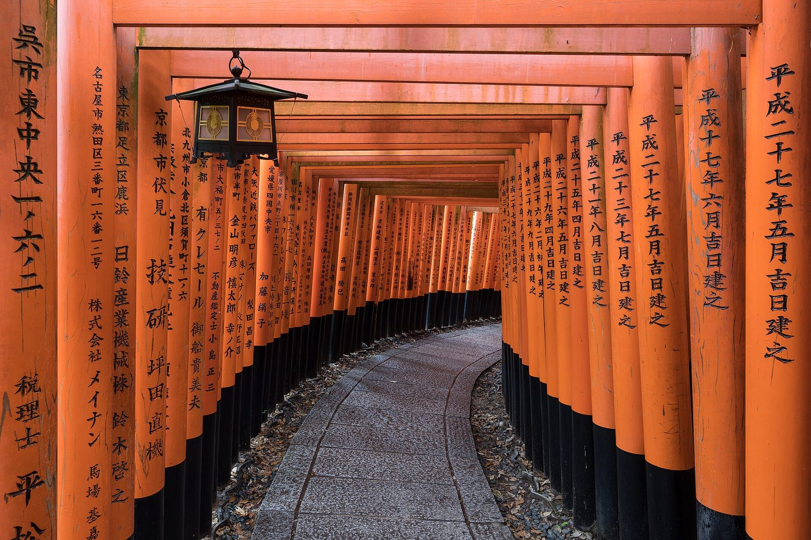
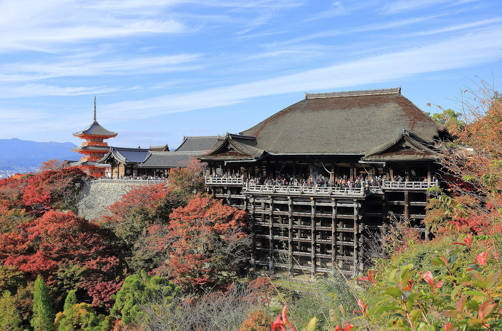
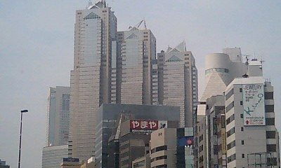
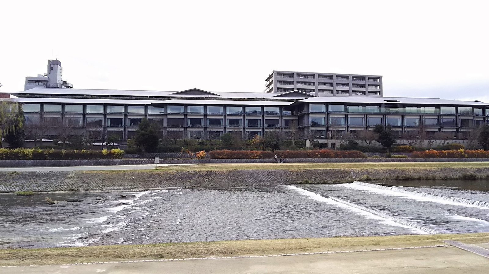

Arrive Tokyo
Settle into your neighborhood, easy dinner nearby.
A study in contrast — Tokyo is neon, food-obsessed, and energetic; Kyoto is temples, gardens, and quiet. Excellent for couples who want both stimulation and stillness in one trip. 8 days on the ground, about 9 door-to-door.


Shoulder: late September–October (comfortable temps, early autumn color starting in Kyoto by late October).
Peak: late July–August (hot, humid, Obon holiday crowds in August).
Alaska's Seattle–Tokyo route (operated by Hawaiian Airlines) flies daily year-round, so there's no flight-driven constraint on this window — pick dates for weather and crowds alone.
A boutique base in Tokyo (TRUNK Hotel Shibuya, ~$350/night) plus one ryokan-style night at Suiran and three nights at the Ritz-Carlton in Kyoto runs lodging to roughly $5,250; add food and transit and the total lands right around $7,000 — tight but doable. Swapping the Ritz nights for another moderate hotel brings it back to comfortably under.
Comfortable, noticeably drier than summer.
A few degrees cooler than Tokyo, similar comfort level.
Settle into your neighborhood, easy dinner nearby.

Shibuya Crossing, Shinjuku Gyoen park, izakaya dinner.
Official site: Shinjuku Gyoen ↗
Tsukiji Outer Market breakfast, teamLab Borderless digital art museum, sushi omakase dinner.
Official tickets: teamLab Borderless ↗
Onsen, Mt. Fuji views, Hakone Open-Air Museum — or a slower Tokyo day instead.
Official site: Hakone Open-Air Museum ↗Bullet train (~2.5hrs), check into a ryokan, evening kaiseki dinner.


Fushimi Inari's torii gates, Kiyomizu-dera, Gion district in the evening.
Official site: Fushimi Inari Taisha ↗ Official site: Kiyomizu-dera ↗Bamboo grove, Tenryu-ji temple garden, wander at your own pace.
Official site: Tenryu-ji ↗Via Tokyo or Osaka, depending on flight routing.
Small, design-forward boutique near Harajuku/Omotesando — no formal star classification, but a well-reviewed pick for a livelier Shibuya base.
The Lost in Translation hotel — top floors of Shinjuku Park Tower, sweeping city views.

Riverside in Arashiyama, hybrid Western-luxury/ryokan experience, private onsen in select rooms.
Central, on the Kamo River, largest rooms in Kyoto, Higashiyama mountain views.
